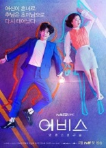

K-dramas
¿Qué son los k-dramas? Son series producidas en Corea. Existen varios géneros, por ejemplo, romance, acción, terror, etc. Pero, yo les recomendare series de romance que en lo personal, me encantaron.
top 4 k-dramas
Aterrizaje de emergencia en tu corazón
Resumen:Una heredera surcoreana con una actitud arrogante sufre un accidente en un parapente mientras intentaba promocionar su nueva línea de ropa deportiva. El accidente fue una tormenta y tornado que no fueron prevenidos. Tal tornado la lleva a Corea del Norte, donde es ilegal cruzar ya que ambas Coreas estan en un conflicto. Y un oficial del ejército decide ayudarla a esconderse y volver a su pais original, de todos los problemas que tendran en el futuro, el que mas se interpondra es el amor.
Abyss
Resumen:Tras enfrentar un fallecimiento prematuro (antes de lo debido) en incidentes separados, Cha Min y Go Se-yeon descubren que han vuelto a la vida gracias a una bola de origen desconocido en nuevos cuerpos que no reconocen, uno es feliz con su nuevo cuerpo y piensa que puede tener una nueva vida mejor que la de antes. Y la otra no esta satisfecha con su nuevo cuerpo, ya que se le ha ido lo "atrevida" y se ha convertido en "adorable". ¿Qué les espera a estos 2, quienes ahora sientes emociones que antes no tenían entre sí?
Esta bien no estar bien
Resumen: Una autora que es emocionalmente inestable de cuentos infantiles, con un traumante pasado esta metida en una pólemica por su actitud que no es apta para su trabajo. Visita un centro psiquiatrico para recuperar su imagen y ahí conoce a un empleado que segun ella es "su tipo" y empieza a acercarse a él (gang-tae). Gang-tae junto a su hermano Sang-tae con autismo. Transitan un camino de sanación, suspenso y romance relacionado al pasado que curiosamente estan muy relacionados.
El rey eterno monarca
Resumen: El emperador Lee Gon de "Corea" persigue a una chica con un sueter de conejo y termina en una puerta mágica, que lo lleva a un mundo paralelo, donde vive una detective que Lee Gon estuvo buscando ya que esta relacionada a un evento traumante que le sucedió de niño, ya que ella lo salvo. Pero, para ella, eso sucederá en el futuro. Un amor que rompe la logica entre sus mundos, ¿No sientes curiosidad sobre como superaran ese problema? o ¿Cómo descubrirán la verdad que les estan escondiendo?